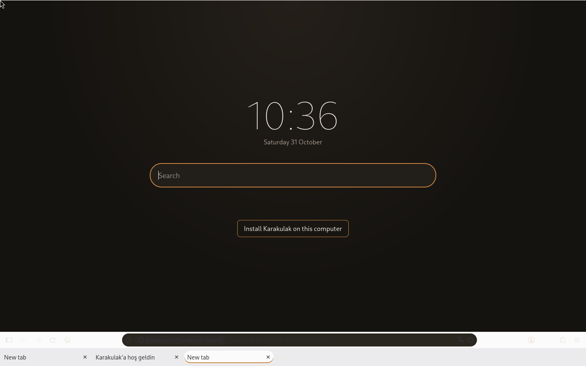
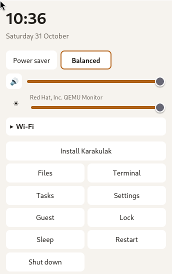
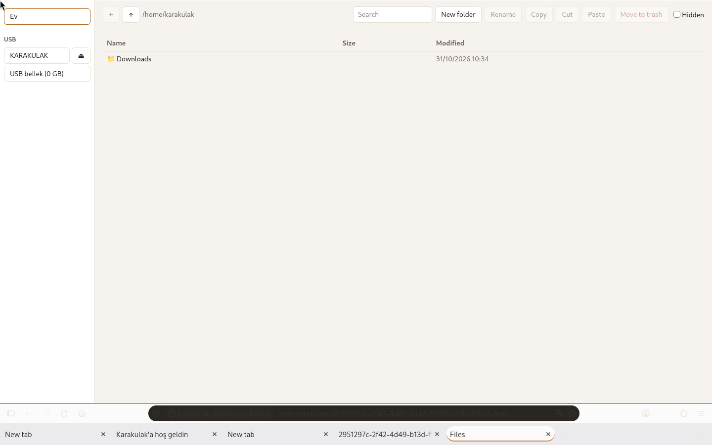
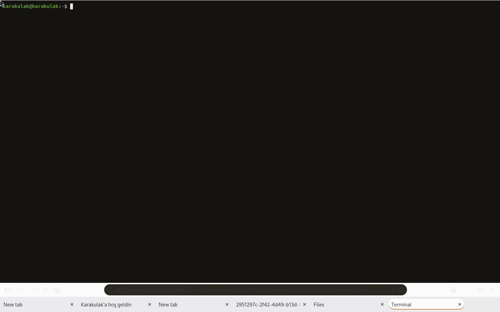
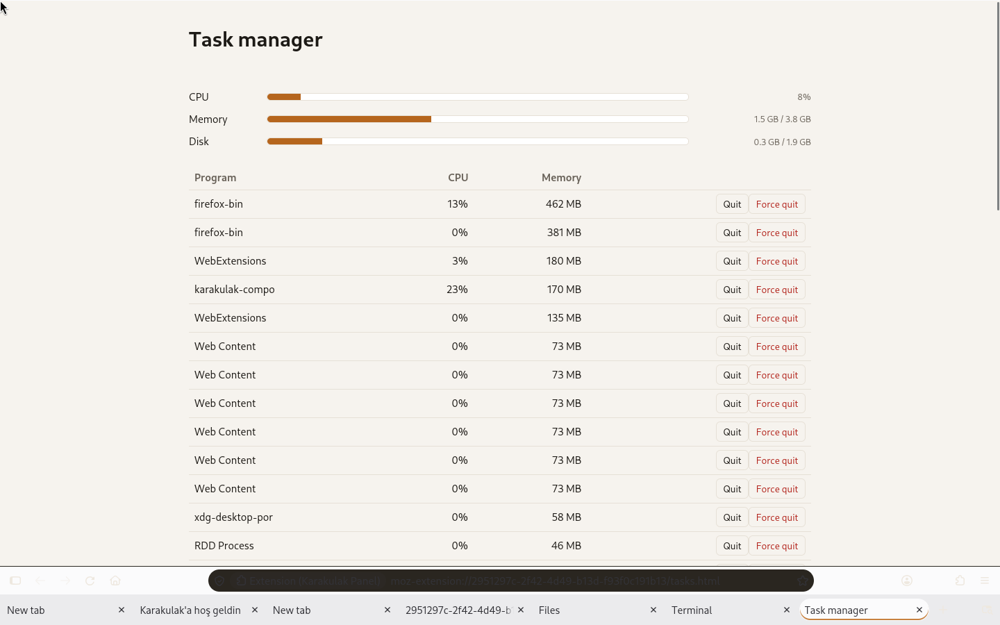
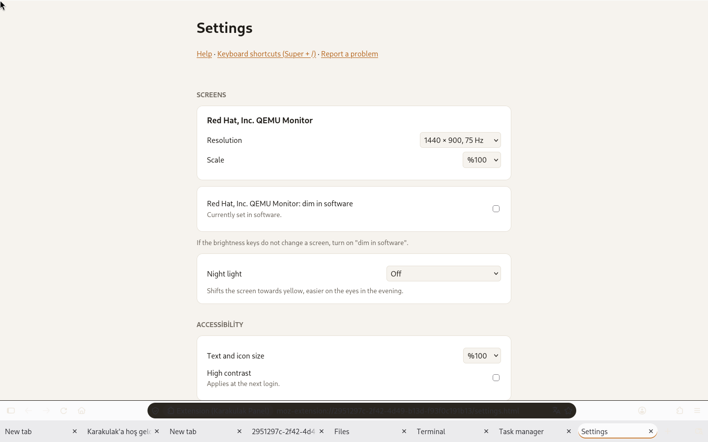
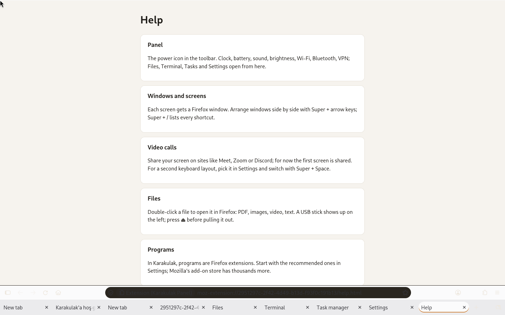
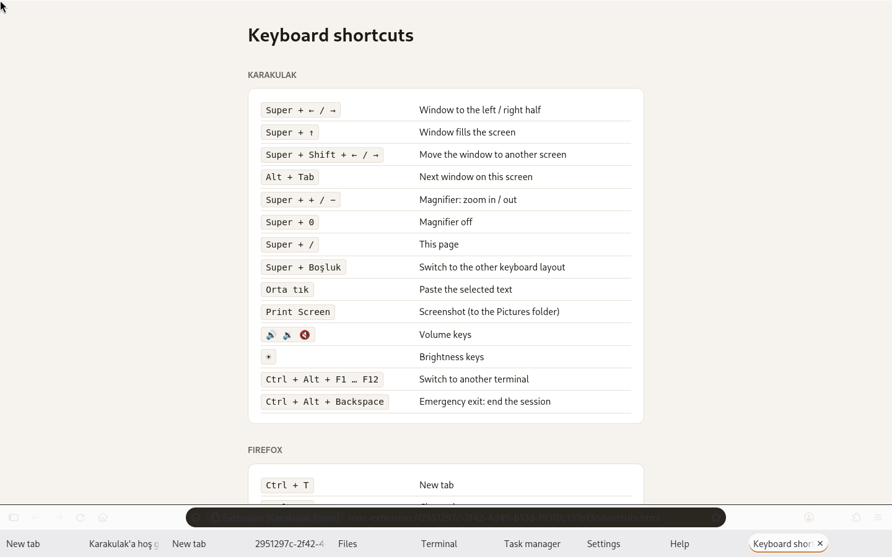
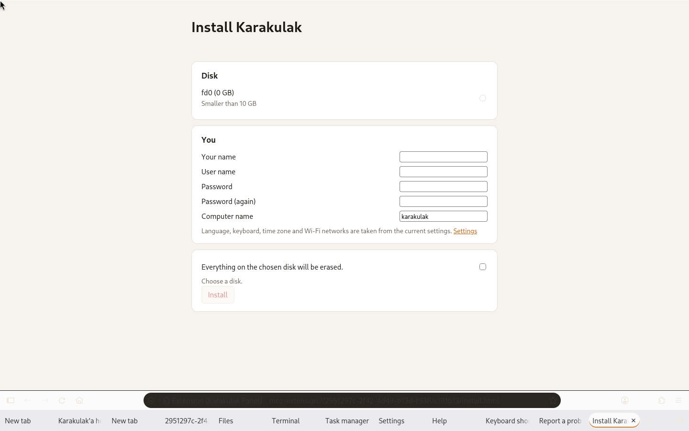

The new tab page: clock, search, and on the live system the install button. The panel: power mode, sound, brightness, Wi-Fi, Bluetooth, and the system's buttons. Files: a file manager as an extension page. A terminal, also a page in Firefox. Task manager: CPU, memory, disk and running programs. Settings: screens, night light, accessibility, language, keyboard, updates, backups. Help, with a link to report a problem. Keyboard shortcuts (Super + /). Installing Karakulak to disk, from a page.
Boots into Firefox
No desktop environment: tabs are the taskbar, and every tool is a browser extension, backed by a small Rust daemon.
Its own compositor
A Wayland compositor written in Rust with Smithay: every screen gets a fullscreen Firefox, locked with your password.
Install from a page
Try it live, then install to disk from Firefox: BIOS or UEFI, Secure Boot included. Every build installs itself in a VM as a test.
Updates itself
Debian trixie underneath, Firefox from Mozilla, Karakulak's own packages from a signed APT repository.